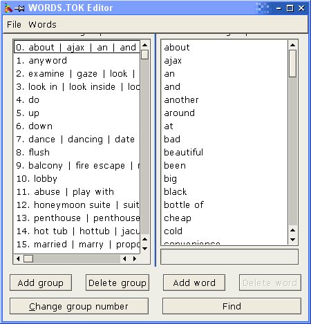

To load the words.tok editor, select the option from the 'Tools' menu or the toolbar. When you do this, it will load the words.tok file of the current game (if a game is open). You can then open a different file if you wish.

Clicking on one of these groups will bring up the contents of the word group in the right-hand pane. To edit a word, just click on it and it will appear in the edit box below. You can also add or delete words here.
You can add or delete word groups as well as changing their number. It does not really matter which word groups have which numbers, other than groups 0, 1 and 9999. You may, however want to structure your groups so that for example the first 20 or so are for general game functions, the next 20 or so are the names of inventory objects and the other words are put after that. Its up to you how you do this.
Your word group structure may become important when you want to merge this file with others.
When merging a file, if a word exists in the merge file that is already in the current file (and in a different group), you will be asked if you wish to replace it or not. When merging files you should be careful about which words you replace as some commands may no longer be recognised by the game. You may need to recompile some or all logics after merging so that they refer to the right word groups in the right places.
You shouldn't need to merge files that often, but when you do it is worth comparing the two files closely. If you're not careful, merging can alter the way commands are understood. For example, "glasses" may be synonymous with "spectacles" at first, but depending on what is in the merge file you might end up with "glasses" being synonymous with "beer mugs".
Note that the merge file (the one you are merging into the current file) is not modified in any way. The changes to the current file made by merging are only saved to disk when you save the file.
Note: When saving a file, it does not necessarily have to be called words.tok. It must have this name, however, for the interpreter to use it.
If you try to save a file containing empty word groups, these will not be saved as the file format does not allow for empty groups. The program will not let you save a file if it does not have any groups. The only reason empty groups are allowed is because they can make editing a bit more convenient.
To my knowledge, the only characters in words recognised by the interpreter are letters, numbers and spaces. The letters are all lower case, as the parser input is not case sensitive. If you enter a word with any characters other than these, they will be automatically removed. Uppercase letters are converted to lower case.